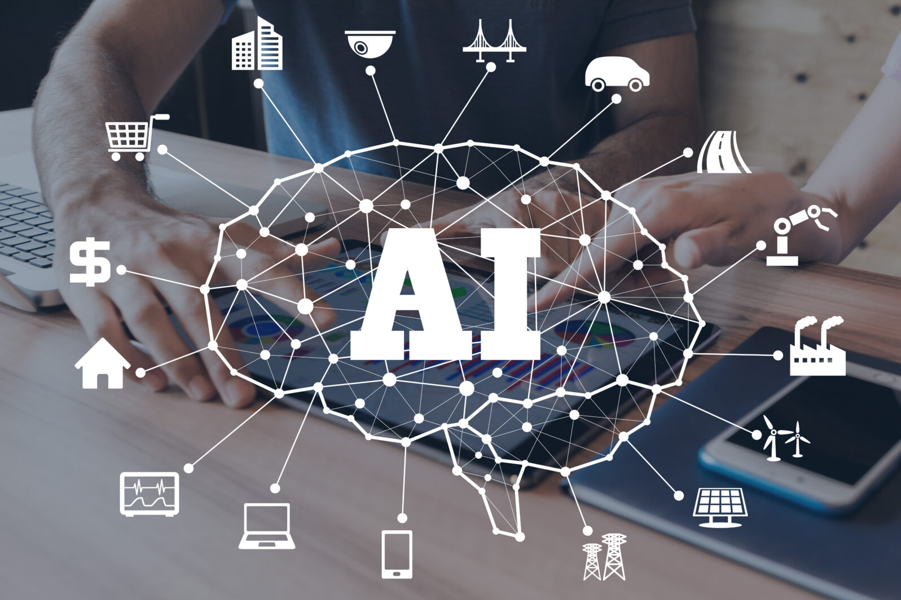

ثورة الذكاء الاصطناعي

ما هو الذكاء الاصطناعي؟
هو قدرة الآلات على أداء مهام تحتاج عادةً إلى ذكاء بشري، مثل فهم اللغة والتعرف على الصور واتخاذ القرارات.
انتشر في السنوات الأخيرة بسرعة كبيرة، وصار جزءًا من الهاتف والسيارة والتعليم والطب.
كيف غيّر حياتنا؟
- التعليم: شرح مخصّص لكل طالب.
- الطب: المساعدة في قراءة الأشعة والتشخيص.
- العمل: أتمتة المهام المتكررة.
- الإبداع: توليد النصوص والصور والموسيقى.
الذكاء الاصطناعي أداة قوية، وقيمتها تعتمد على طريقة استخدامنا لها.
شاهد المزيد
إلى أين نتجه؟
المستقبل يحمل فرصًا كبيرة وتحديات مثل الخصوصية وسوق العمل. للاستزادة اقرأ صفحة ويكيبيديا عن الذكاء الاصطناعي.